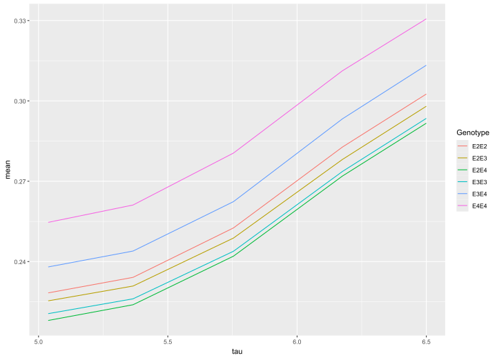
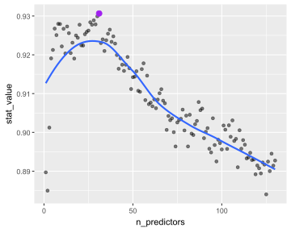

Oblique random forests with aorsf
MELODEM data workshop
Byron C. Jaeger, PhD
Wake Forest University School of Medicine
Overview
What does oblique mean?
aorsfMotivation
Design
Benchmarks
Applications
What does oblique mean?
Background
Axis-based splits (left) and oblique splits (right)

Oblique tree: first split
First, split mostly by bill length
Oblique tree: second split
First, split mostly by bill length
Second, make a triangle for the gentoo.

Oblique random forests
Aggregating randomized trees gives the oblique random forest

Surprisingly different!
Despite very many similarities, axis-based and oblique random forests may give different results.

Prior benchmarks
Breiman (2001) found oblique random forests compared more favorably to boosting than axis based ones.
Menze et al. (2011) coined the term ‘oblique’ random forest and introduced variable importance metrics for it.
On benchmarking 190 classifiers on 121 public datasets, Katuwal, Suganthan, and Zhang (2020) found variations on the oblique random forests were the top 3 classifiers.
Leo Breiman named it “Forest-RC” but it later came to be known as oblique
Yet, everyone uses axis-based random forests. Few people even know that oblique random forests exist.
Here’s why:

aorsf
accelerated oblique random (survival) forest
What is the problem?
Oblique random forests are slow. How slow, you ask?
library(ODRF)
library(ranger)
library(microbenchmark)
microbenchmark(
ODRF = ODRF(species ~ bill_length_mm + flipper_length_mm,
data = penguins,
ntrees = 500),
ranger = ranger(species ~ bill_length_mm + flipper_length_mm,
data = penguins,
num.trees = 500),
times = 5
)Unit: milliseconds
expr min lq mean median uq max neval cld
ODRF 3571.7562 3711.5112 3702.25270 3722.025 3732.6053 3773.3657 5 a
ranger 20.6516 21.4896 27.57974 21.989 25.2287 48.5398 5 bWhy so slow?
Suppose we’re given \(p\) continuous predictors, each with \(k\) unique values.
If predictor has \(k\) unique values \(\Rightarrow\) max \(k-2\) potential splits
At most, \(p \cdot (k-2)\) axis-based splits to assess
Suppose we assess \(L\) linear combinations of predictors:
- At most, \(L \cdot (k-2)\) oblique splits to assess
Usually, \(L \gg p\) to find good oblique splits
Find 1 good linear combination?
What if we use a method like regression to find \(L=1\) linear combination?
\[\text{Time to assess an oblique split }= R + S\]
Where
\(R\) is time to fit regression
\(S\) is time to assess up to \(k-2\) splits
If \(R\) is small, we can do okay with this!
But \(R\) is not small
It takes \(\approx\) 2.5ms for 1 oblique split, <20ms to fit 500 axis-based trees…
# compare time for 1 oblique split to 500 axis-based trees
microbenchmark(
# 1 oblique split
glm = glm(I(species == 'Adelie') ~ bill_length_mm + flipper_length_mm,
family = 'binomial',
data = penguins),
# 500 axis based trees
ranger = ranger(species ~ bill_length_mm + flipper_length_mm,
data = penguins,
num.trees = 500)
)Unit: milliseconds
expr min lq mean median uq max neval cld
glm 1.7644 2.17035 2.543723 2.37145 2.52560 19.8735 100 a
ranger 19.5321 20.31135 20.990783 20.57210 20.77865 37.5845 100 b1 oblique tree with 10 splits takes longer than 500 axis-based trees 😩
aorsf
Jaeger et al. (2022): Accelerated oblique random (survival) forest
We take the approach of minimizing \(R\)
Instead of fitting a full regression model, we
Avoid scaling during regression (minimize data copying)
Relax convergence criteria (e.g., use just 1 iteration)
While model convergence is vital for valid statistical inference, it isn’t that big of a deal for finding oblique splits. Remember, we just have to do slightly better than random guessing.
Benchmark
Minimizing \(R\) helps.
microbenchmark(
ODRF = ODRF(species ~ bill_length_mm + flipper_length_mm,
data = penguins,
ntrees = 500),
aorsf = orsf(species ~ bill_length_mm + flipper_length_mm,
data = penguins,
n_tree = 500),
ranger = ranger(species ~ bill_length_mm + flipper_length_mm,
data = penguins,
num.trees = 500),
times = 5
)Unit: milliseconds
expr min lq mean median uq max neval cld
ODRF 3540.8292 3721.2370 3714.38962 3753.8662 3776.0013 3780.0144 5 a
aorsf 39.1224 41.6434 51.17836 44.1699 57.6122 73.3439 5 b
ranger 21.0272 21.5199 22.69840 22.1287 22.2456 26.5706 5 bMore benchmarks
Jaeger et al. (2024) compare aorsf to obliqueRSF:
Evaluated in 35 risk prediction tasks (21 datasets)
Measured computation time and C-statistic.
Used Bayesian linear mixed models to test for differences.
Computation time
aorsf over 300 times faster than obliqueRSF
C-statistic
aorsf practically equivalent to obliqueRSF
Applications of aorsf
Data
I’ll use Alzheimer’s disease data (ad_data) from the modeldata package.
Rows: 333
Columns: 131
$ ACE_CD143_Angiotensin_Converti <dbl> 2.0031003, 1.5618560, 1.5206598, 1.6808260, 2.4009308, 0.…
$ ACTH_Adrenocorticotropic_Hormon <dbl> -1.3862944, -1.3862944, -1.7147984, -1.6094379, -0.967584…
$ AXL <dbl> 1.09838668, 0.68328157, -0.14527630, 0.68328157, 0.190890…
$ Adiponectin <dbl> -5.360193, -5.020686, -5.809143, -5.115996, -4.779524, -5…
$ Alpha_1_Antichymotrypsin <dbl> 1.7404662, 1.4586150, 1.1939225, 1.2809338, 2.1282317, 1.…
$ Alpha_1_Antitrypsin <dbl> -12.631361, -11.909882, -13.642963, -15.523564, -11.13306…
$ Alpha_1_Microglobulin <dbl> -2.577022, -3.244194, -2.882404, -3.170086, -2.343407, -2…
$ Alpha_2_Macroglobulin <dbl> -72.65029, -154.61228, -136.52918, -98.36175, -144.94460,…
$ Angiopoietin_2_ANG_2 <dbl> 1.06471074, 0.74193734, 0.83290912, 0.91629073, 0.9555114…
$ Angiotensinogen <dbl> 2.510547, 2.457283, 1.976365, 2.376085, 2.862219, 2.52402…
$ Apolipoprotein_A_IV <dbl> -1.427116, -1.660731, -1.660731, -2.120264, -1.171183, -1…
$ Apolipoprotein_A1 <dbl> -7.402052, -7.047017, -7.684284, -8.047190, -6.725434, -7…
$ Apolipoprotein_A2 <dbl> -0.26136476, -0.86750057, -0.65392647, -1.23787436, 0.095…
$ Apolipoprotein_B <dbl> -4.624044, -6.747507, -3.976069, -6.517424, -3.378594, -2…
$ Apolipoprotein_CI <dbl> -1.2729657, -1.2729657, -1.7147984, -1.9661129, -0.755022…
$ Apolipoprotein_CIII <dbl> -2.312635, -2.343407, -2.748872, -2.995732, -1.514128, -2…
$ Apolipoprotein_D <dbl> 2.0794415, 1.3350011, 1.3350011, 1.4350845, 1.6292405, 1.…
$ Apolipoprotein_E <dbl> 3.7545215, 3.0971187, 2.7530556, 2.3713615, 3.0671471, 0.…
$ Apolipoprotein_H <dbl> -0.15734908, -0.57539617, -0.34483937, -0.53172814, 0.662…
$ B_Lymphocyte_Chemoattractant_BL <dbl> 2.2969819, 1.6731213, 1.6731213, 1.9805094, 2.2969819, 2.…
$ BMP_6 <dbl> -2.200744, -1.728053, -2.062421, -1.982912, -1.241520, -1…
$ Beta_2_Microglobulin <dbl> 0.69314718, 0.47000363, 0.33647224, 0.64185389, 0.3364722…
$ Betacellulin <int> 34, 53, 49, 52, 67, 51, 41, 42, 58, 59, 32, 43, 51, 53, 4…
$ C_Reactive_Protein <dbl> -4.074542, -6.645391, -8.047190, -6.214608, -4.342806, -7…
$ CD40 <dbl> -0.7964147, -1.2733760, -1.2415199, -1.1238408, -0.924034…
$ CD5L <dbl> 0.09531018, -0.67334455, 0.09531018, -0.32850407, 0.36331…
$ Calbindin <dbl> 33.21363, 25.27636, 22.16609, 23.45584, 21.83275, 13.2315…
$ Calcitonin <dbl> 1.3862944, 3.6109179, 2.1162555, -0.1508229, 1.3083328, 1…
$ CgA <dbl> 397.6536, 465.6759, 347.8639, 334.2346, 442.8046, 137.947…
$ Clusterin_Apo_J <dbl> 3.555348, 3.044522, 2.772589, 2.833213, 3.044522, 2.56494…
$ Complement_3 <dbl> -10.36305, -16.10824, -16.10824, -13.20556, -12.81314, -1…
$ Complement_Factor_H <dbl> 3.5737252, 3.6000471, 4.4745686, 3.0971187, 7.2451496, 3.…
$ Connective_Tissue_Growth_Factor <dbl> 0.5306283, 0.5877867, 0.6418539, 0.5306283, 0.9162907, 0.…
$ Cortisol <dbl> 10.0, 12.0, 10.0, 14.0, 11.0, 13.0, 4.9, 13.0, 12.0, 17.0…
$ Creatine_Kinase_MB <dbl> -1.710172, -1.751002, -1.383559, -1.647864, -1.625834, -1…
$ Cystatin_C <dbl> 9.041922, 9.067624, 8.954157, 9.581904, 8.977146, 7.83597…
$ EGF_R <dbl> -0.1354543, -0.3700474, -0.7329871, -0.4218532, -0.620603…
$ EN_RAGE <dbl> -3.688879, -3.816713, -4.755993, -2.937463, -2.364460, -3…
$ ENA_78 <dbl> -1.349543, -1.356595, -1.390672, -1.367775, -1.339440, -1…
$ Eotaxin_3 <int> 53, 62, 62, 44, 64, 57, 64, 64, 64, 70, 82, 73, 70, 67, 3…
$ FAS <dbl> -0.08338161, -0.52763274, -0.63487827, -0.47803580, -0.12…
$ FSH_Follicle_Stimulation_Hormon <dbl> -0.6516715, -1.6272839, -1.5630004, -0.5902871, -0.976300…
$ Fas_Ligand <dbl> 3.1014922, 2.9788133, 1.3600098, 2.5372201, 4.0372847, 2.…
$ Fatty_Acid_Binding_Protein <dbl> 2.5208712, 2.2477966, 0.9063009, 0.6237306, 2.6345883, 0.…
$ Ferritin <dbl> 3.329165, 3.932959, 3.176872, 3.138093, 2.690416, 1.84707…
$ Fetuin_A <dbl> 1.2809338, 1.1939225, 1.4109870, 0.7419373, 2.1517622, 1.…
$ Fibrinogen <dbl> -7.035589, -8.047190, -7.195437, -7.799353, -6.980326, -6…
$ GRO_alpha <dbl> 1.381830, 1.372438, 1.412679, 1.372438, 1.398431, 1.39843…
$ Gamma_Interferon_induced_Monokin <dbl> 2.949822, 2.721793, 2.762231, 2.885476, 2.851987, 2.82244…
$ Glutathione_S_Transferase_alpha <dbl> 1.0641271, 0.8670202, 0.8890150, 0.7083677, 1.2358607, 1.…
$ HB_EGF <dbl> 6.559746, 8.754531, 7.745463, 5.949436, 7.245150, 6.41301…
$ HCC_4 <dbl> -3.036554, -4.074542, -3.649659, -3.816713, -3.146555, -3…
$ Hepatocyte_Growth_Factor_HGF <dbl> 0.58778666, 0.53062825, 0.09531018, 0.40546511, 0.5306282…
$ I_309 <dbl> 3.433987, 3.135494, 2.397895, 3.367296, 3.761200, 2.70805…
$ ICAM_1 <dbl> -0.1907787, -0.4620172, -0.4620172, -0.8572661, 0.0971503…
$ IGF_BP_2 <dbl> 5.609472, 5.347108, 5.181784, 5.424950, 5.420535, 5.05624…
$ IL_11 <dbl> 5.121987, 4.936704, 4.665910, 6.223931, 7.070709, 6.10321…
$ IL_13 <dbl> 1.282549, 1.269463, 1.274133, 1.307549, 1.309980, 1.28254…
$ IL_16 <dbl> 4.192081, 2.876338, 2.616102, 2.441056, 4.736472, 2.67103…
$ IL_17E <dbl> 5.731246, 6.705891, 4.149327, 4.695848, 4.204987, 3.63705…
$ IL_1alpha <dbl> -6.571283, -8.047190, -8.180721, -7.600902, -6.943657, -8…
$ IL_3 <dbl> -3.244194, -3.912023, -4.645992, -4.268698, -2.995732, -3…
$ IL_4 <dbl> 2.484907, 2.397895, 1.824549, 1.481605, 2.708050, 1.20896…
$ IL_5 <dbl> 1.09861229, 0.69314718, -0.24846136, 0.78845736, 1.163150…
$ IL_6 <dbl> 0.26936976, 0.09622438, 0.18568645, -0.37116408, -0.07204…
$ IL_6_Receptor <dbl> 0.64279595, 0.43115645, 0.09668586, 0.57519641, 0.0966858…
$ IL_7 <dbl> 4.8050453, 3.7055056, 1.0056222, 2.3362105, 4.2875620, 2.…
$ IL_8 <dbl> 1.711325, 1.675557, 1.691393, 1.719944, 1.764298, 1.70827…
$ IP_10_Inducible_Protein_10 <dbl> 6.242223, 5.686975, 5.049856, 5.602119, 6.369901, 5.48063…
$ IgA <dbl> -6.812445, -6.377127, -6.319969, -7.621105, -4.645992, -5…
$ Insulin <dbl> -0.6258253, -0.9431406, -1.4466191, -1.4852687, -0.300311…
$ Kidney_Injury_Molecule_1_KIM_1 <dbl> -1.204295, -1.197703, -1.191191, -1.231557, -1.163800, -1…
$ LOX_1 <dbl> 1.7047481, 1.5260563, 1.1631508, 1.2237754, 1.3609766, 0.…
$ Leptin <dbl> -1.5290628, -1.4660558, -1.6622675, -1.2693924, -0.915106…
$ Lipoprotein_a <dbl> -4.268698, -4.933674, -5.843045, -4.990833, -2.937463, -4…
$ MCP_1 <dbl> 6.740519, 6.849066, 6.767343, 6.781058, 6.722630, 6.54103…
$ MCP_2 <dbl> 1.9805094, 1.8088944, 0.4005958, 1.9805094, 2.2208309, 2.…
$ MIF <dbl> -1.237874, -1.897120, -2.302585, -1.660731, -1.897120, -2…
$ MIP_1alpha <dbl> 4.968453, 3.690160, 4.049508, 4.928562, 6.452764, 4.60342…
$ MIP_1beta <dbl> 3.258097, 3.135494, 2.397895, 3.218876, 3.526361, 2.89037…
$ MMP_2 <dbl> 4.478566, 3.781473, 2.866631, 2.968511, 3.690160, 2.91776…
$ MMP_3 <dbl> -2.207275, -2.465104, -2.302585, -1.771957, -1.560648, -3…
$ MMP10 <dbl> -3.270169, -3.649659, -2.733368, -4.074542, -2.617296, -3…
$ MMP7 <dbl> -3.7735027, -5.9681907, -4.0302269, -6.8561489, -0.222222…
$ Myoglobin <dbl> -1.89711998, -0.75502258, -1.38629436, -1.13943428, -1.77…
$ NT_proBNP <dbl> 4.553877, 4.219508, 4.248495, 4.110874, 4.465908, 4.18965…
$ NrCAM <dbl> 5.003946, 5.209486, 4.744932, 4.969813, 5.198497, 3.25809…
$ Osteopontin <dbl> 5.356586, 6.003887, 5.017280, 5.768321, 5.693732, 4.73619…
$ PAI_1 <dbl> 1.00350156, -0.03059880, 0.43837211, 0.00000000, 0.252304…
$ PAPP_A <dbl> -2.902226, -2.813276, -2.935541, -2.786601, -2.935541, -2…
$ PLGF <dbl> 4.442651, 4.025352, 4.510860, 3.433987, 4.795791, 4.39444…
$ PYY <dbl> 3.218876, 3.135494, 2.890372, 2.833213, 3.663562, 3.33220…
$ Pancreatic_polypeptide <dbl> 0.57878085, 0.33647224, -0.89159812, -0.82098055, 0.26236…
$ Prolactin <dbl> 0.00000000, -0.51082562, -0.13926207, -0.04082199, 0.1823…
$ Prostatic_Acid_Phosphatase <dbl> -1.620527, -1.739232, -1.636682, -1.739232, -1.696685, -1…
$ Protein_S <dbl> -1.784998, -2.463991, -2.259135, -2.703458, -1.659842, -2…
$ Pulmonary_and_Activation_Regulat <dbl> -0.8439701, -2.3025851, -1.6607312, -1.1086626, -0.562118…
$ RANTES <dbl> -6.214608, -6.938214, -6.645391, -5.991465, -6.319969, -6…
$ Resistin <dbl> -16.475315, -16.025283, -16.475315, -13.501240, -11.09283…
$ S100b <dbl> 1.5618560, 1.7566212, 1.4357282, 1.2543998, 1.3012972, 1.…
$ SGOT <dbl> -0.94160854, -0.65392647, 0.33647224, -0.19845094, 0.0953…
$ SHBG <dbl> -1.897120, -1.560648, -2.207275, -3.146555, -2.430418, -2…
$ SOD <dbl> 5.609472, 5.814131, 5.723585, 5.771441, 5.655992, 4.54329…
$ Serum_Amyloid_P <dbl> -5.599422, -6.119298, -5.381699, -6.645391, -5.203007, -5…
$ Sortilin <dbl> 4.908629, 5.478731, 3.810182, 3.402176, 3.402176, 2.97881…
$ Stem_Cell_Factor <dbl> 4.174387, 3.713572, 3.433987, 3.951244, 4.060443, 2.56494…
$ TGF_alpha <dbl> 8.649098, 11.331619, 10.858497, 9.454406, 8.323453, 10.00…
$ TIMP_1 <dbl> 15.204651, 11.266499, 12.282857, 11.114877, 13.748016, 11…
$ TNF_RII <dbl> -0.06187540, -0.32850407, -0.41551544, -0.34249031, -0.34…
$ TRAIL_R3 <dbl> -0.1829004, -0.5007471, -0.9240345, -0.3848591, -0.858259…
$ TTR_prealbumin <dbl> 2.944439, 2.833213, 2.944439, 2.944439, 3.044522, 3.04452…
$ Tamm_Horsfall_Protein_THP <dbl> -3.095810, -3.111190, -3.166721, -3.155652, -3.038017, -3…
$ Thrombomodulin <dbl> -1.340566, -1.675252, -1.534276, -1.975407, -1.210709, -1…
$ Thrombopoietin <dbl> -0.1026334, -0.6733501, -0.9229670, -0.7510004, 0.0976177…
$ Thymus_Expressed_Chemokine_TECK <dbl> 4.149327, 3.810182, 2.791992, 4.037285, 4.534163, 4.53416…
$ Thyroid_Stimulating_Hormone <dbl> -3.863233, -4.828314, -4.990833, -4.892852, -4.645992, -4…
$ Thyroxine_Binding_Globulin <dbl> -1.4271164, -1.6094379, -1.8971200, -2.0402208, -0.478035…
$ Tissue_Factor <dbl> 2.04122033, 2.02814825, 1.43508453, 2.02814825, 1.9878743…
$ Transferrin <dbl> 3.332205, 2.890372, 2.890372, 2.890372, 3.496508, 2.99573…
$ Trefoil_Factor_3_TFF3 <dbl> -3.381395, -3.912023, -3.729701, -3.816713, -3.442019, -4…
$ VCAM_1 <dbl> 3.258097, 2.708050, 2.639057, 2.772589, 3.044522, 2.20827…
$ VEGF <dbl> 22.03456, 18.60184, 17.47619, 17.54560, 20.77860, 13.1976…
$ Vitronectin <dbl> -0.04082199, -0.38566248, -0.22314355, -0.65392647, 0.166…
$ von_Willebrand_Factor <dbl> -3.146555, -3.863233, -3.540459, -3.863233, -3.816713, -4…
$ age <dbl> 0.9876238, 0.9861496, 0.9866667, 0.9867021, 0.9871630, 0.…
$ tau <dbl> 6.297754, 6.659294, 6.270988, 6.152733, 6.623707, 5.36129…
$ p_tau <dbl> 4.348108, 4.859967, 4.400247, 4.494886, 4.524589, 3.46573…
$ Ab_42 <dbl> 12.019678, 11.015759, 12.302271, 12.398138, 11.024109, 11…
$ male <dbl> 0, 0, 1, 0, 0, 1, 1, 1, 0, 0, 0, 1, 1, 0, 0, 0, 1, 1, 0, …
$ Genotype <fct> E3E3, E3E4, E3E4, E3E4, E3E3, E4E4, E2E3, E2E3, E3E3, E2E…
$ Class <fct> Control, Control, Control, Control, Control, Impaired, Co…Model fitting
Formula interface
Similar to other R packages
Shortcut:
outcome ~ .
---------- Oblique random classification forest
Linear combinations: Accelerated Logistic regression
N observations: 333
N classes: 2
N trees: 500
N predictors total: 130
N predictors per node: 12
Average leaves per tree: 13.118
Min observations in leaf: 5
OOB stat value: 0.89
OOB stat type: AUC-ROC
Variable importance: anova
-----------------------------------------Your turn
Open classwork/03-oblique_forests.qmd and complete Exercise 1
Partial dependence
Purpose: Interpret a model by evaluating its predictions on special data.
Example: Expected prediction from the model as a function of age.
Pseudo-code: for i in seq(min_age, max_age):
Set all values of
agetoiin the training dataCompute out-of-bag predictions for training data
Save the mean prediction and
i
Single variable summary
Similar to summary(), orsf_summarize_uni() computes out-of-bag partial dependence on the number of variables you request.
-- tau (VI Rank: 1) ----------------------------
|------------ Probability ------------|
Value Mean Median 25th % 75th %
<char> <num> <num> <num> <num>
5.04 0.2289781 0.1909107 0.1219569 0.3173935
5.37 0.2349259 0.1965919 0.1241136 0.3251669
5.75 0.2513727 0.2118122 0.1349814 0.3528321
6.18 0.2843050 0.2464631 0.1613582 0.3984072
6.50 0.3074606 0.2659016 0.1825196 0.4170013
Predicted probability for top 1 predictors Multi-variable summary
See if predictors interact (they don’t in this case)
Your turn
Complete exercise 2
Variable selection
We want to remove predictors that don’t have any prognostic value.
orsf_vs()performs recursive feature elimination.Fit a forest and estimate importance
Drop the least important predictor
Repeat until <
n_predictor_minpredictors left.
Faster
If needed, reduce n_tree and increase leaf_min_obs to speed this up
Pick your variables
Plot the history of performance and variables included.

Your turn
Complete exercise 3
Compare models
For causal random forests, we’ll need good prediction models for both dementia and APOE4 status.
Developing and evaluating prediction models is a deep topic.
We will cover the basics:
Data splitting
Pre-processing
Evaluating in test data
We’ll do this using the tidymodels framework.
Data splitting
If you evaluate prediction models with their training data, you
Reward models that overfit the data.
Don’t learn much about what will happen in the real world.
So, always evaluate prediction models with data that is “new”
Pre-processing
Why do we pre-process data?
Some models require special data format
Impute missing values correctly
Sometimes its helpful to apply transformations to data prior to modeling
We’ll train our pre-processing steps using the recipes package
Training the recipe
With its steps defined, we are ready to
- train the recipe
- use it to process the training and testing data.
Fitting models
parsnipis a unified interface for models with R.bonsaiextendsparsnip, focusing on decision tree models.
With these packages, we make a model specification, and then fit it.
library(parsnip)
library(bonsai)
# make model specifications
ranger_spec <- rand_forest(mode = 'classification', engine = 'ranger')
aorsf_spec <- rand_forest(mode = 'classification', engine = 'aorsf')
# fit them
ranger_fit <- fit(ranger_spec, data = train_processed, formula = Class ~ .)
aorsf_fit <- fit(aorsf_spec, data = train_processed, formula = Class ~ .)Evaluating in test data
We predict probabilities for observations in the testing data, and evaluate discrimination using the yardstick package:
# A tibble: 3 × 4
model .metric .estimator .estimate
<chr> <chr> <chr> <dbl>
1 aorsf roc_auc binary 0.936
2 odrf roc_auc binary 0.939
3 ranger roc_auc binary 0.918To the pipeline
- Copy/paste this code into your
_targets.Rfile.
- Modify this code, replacing
zzzzwith the name of your dataset.
References
Slides available at https://bcjaeger.github.io/melodem-apoe4-het/
Breiman, Leo. 2001. “Random Forests.” Machine Learning 45: 5–32.
Jaeger, Byron C, Sawyer Welden, Kristin Lenoir, and Nicholas M Pajewski. 2022. “Aorsf: An r Package for Supervised Learning Using the Oblique Random Survival Forest.” Journal of Open Source Software 7 (77): 4705.
Jaeger, Byron C, Sawyer Welden, Kristin Lenoir, Jaime L Speiser, Matthew W Segar, Ambarish Pandey, and Nicholas M Pajewski. 2024. “Accelerated and Interpretable Oblique Random Survival Forests.” Journal of Computational and Graphical Statistics 33 (1): 192–207.
Katuwal, Rakesh, Ponnuthurai Nagaratnam Suganthan, and Le Zhang. 2020. “Heterogeneous Oblique Random Forest.” Pattern Recognition 99: 107078.
Menze, Bjoern H, B Michael Kelm, Daniel N Splitthoff, Ullrich Koethe, and Fred A Hamprecht. 2011. “On Oblique Random Forests.” In Machine Learning and Knowledge Discovery in Databases: European Conference, ECML PKDD 2011, Athens, Greece, September 5-9, 2011, Proceedings, Part II 22, 453–69. Springer.